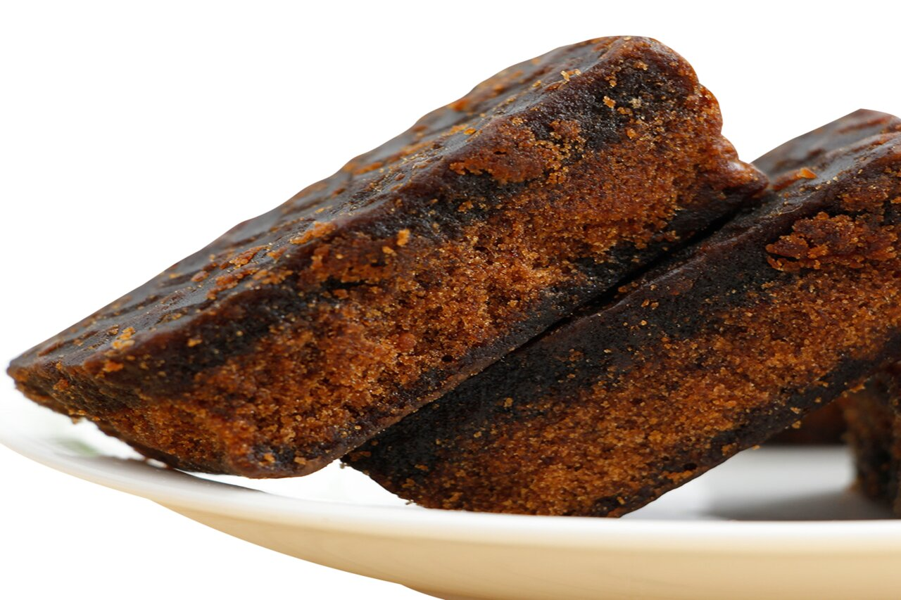

Localizada no coração da cidade a Susu Eirelli traz para o mercado o que há de melhor na rapadura para o mundo. Fundada em 1994, a Susu Eirelli já é destaque no Brasil e no mundo. E conquista a cada vez mais os seus clientes.
Nossa Missão é: Levar ao mundo o sabor da rapadura feita com o melhor ingrediente nativo do nosso país a Cana de açúcar.
Como beneficio acreditamos em um alimento natural e saudavel produzido diretamente da cana de açucar,mesmo sendo um produto industrializado nosso cliente estará ingerindo vitaminas como complexo B, fosforo, ferro e entre outros.
Usamos como ingredientes produtos naturais sendo: coco, canela e o amendoim. Indicamos também para que pessoas com diabetes possam ingerir com moderação nosso produto ja que a mesma oferece tantos beneficios.
Para 100g